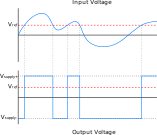

Op-Amp Basics
The op-amp (operational amplifier) is a fundamental building block of analog electronics. With the addition of other simple components, they can be used to perform complex mathematical operations such as differentiation, integration, exponential conversion, etc. However, at its core, the op-amp is simply a differential amplifier with a very high gain.
The symbol for an op-amp is a triangle, with non-inverting (Vin+) and inverting (Vin-) inputs indicated by ‘+’ and ‘-‘, respectively. This is shown in Figure 1. Often, the power supply connections are left off to reduce clutter in schematics, as shown in Figure 1b. In this case, it is generally implied that the op-amp’s power connections are connected to the circuit’s supply voltages.
This article will cover the most common type of op-amp, the voltage-feedback amplifier (VFA), which acts as a voltage-controlled voltage source (VCVS). This is generally what is referred to when using the term ‘op-amp’, though there are four possible classes of op-amps depending on the input and output parameters, shown in Figure 2. In synthesizer design, and analog circuit design in general, VFAs and OTAs are by far the most common.
Figure 2
Basic Operation
Gain
One of the defining features of op-amps is their very high open-loop gain. The term ‘open-loop’ refers to the configuration with no feedback, as shown in Figure 3a. Figure 3b shows the ‘closed-loop’ configuration, in this case with negative feedback.
Figure 3
An op-amp’s gain, A, is defined as the ratio of the output voltage, Vout, to the input voltage, Vin. Since op-amps are differential amplifiers, the input voltage, Vin, is the difference between the non-inverting and inverting inputs. Using these two relations, the output voltage can be expressed in terms of the gain and the input voltages:
For typical op-amps, the open-loop gain is on the order of 100,000, or 100dB. In other words, the voltage of a signal at the input will be be multiplied by 100,000 at the output. Of course, op-amps are limited by their supply voltages, so instead of generating extremely high voltages the op-amp will saturate at either the positive or negative supply voltage.
Feedback
Feedback is an essential concept to understand when working with op-amps. Feedback refers to the technique of ‘feeding’ the output of the op-amp back to the input, generally to the inverting input. This is known as negative feedback, whereas connecting the output to the non-inverting input is positive feedback. Adding feedback converts the op-amp to a closed-loop configuration.
Negative feedback is a way to control and stabilize the gain of the op-amp, since the high gain of the open-loop configuration is not terribly useful (though it does have some important uses, which will be described later). Since op-amps are differential amplifiers, negative feedback will feed the difference between the input signals back to the inverting input. If Vin+ > Vin-, this difference will be positive, and the voltage at the inverting input will increase. If Vin+ < Vin- the difference will be negative, decreasing the voltage at the inverting input. In effect, negative feedback will cause the op-amp to ‘push’ the voltage of its inverting input towards the non-inverting input until they are equal (the voltage difference is 0). Conversely, positive feedback will have the opposite effect, pushing the non-inverting input away from the inverting input.
Impedance
Another important characteristic of op-amps is their input and output impedances. Op-amps have very high impedance on both of its inputs, meaning almost no current will flow into the op-amp through them. Conversely, their output has very low impedance. Under normal circumstances, the input and output impedances can be assumed to be ∞ and 0, respectively.
Figure 4 illustrates the internal impedances in a simplified model of an op-amp.
Figure 4
Rules of Ideal Op-Amp
To summarize the previous points discussed, the following are key rules to remember when analyzing and designing op-amp circuits:
- Very high input impedance
- Very low output impedance
- Negative feedback will drive the two inputs to be equal
- Positive feedback will drive the two inputs apart
Common Configurations
Comparator
Perhaps the simplest configuration of an op amp is as a comparator. The comparator has no feedback, and often one of the inputs is held at a constant reference voltage, called Vref. Due to the high input impedance of the op-amp, the impedance of the voltage reference itself is not critical. Commonly, voltage dividers are used as reference voltage sources. Alternatively, a zener diode or voltage regulator can be used.
Figure 5
This configuration takes advantage of the high open-loop gain of the op-amp to ‘digitize’ an analog signal. Since the op-amp amplifies the difference between the input signals, this can be viewed as ‘comparing’ the input voltages – if Vin+ > Vin-, the output will quickly swing to the positive supply voltage, and vice versa. This behavior is shown in Figure 6 with a constant positive reference voltage at the inverting input.
 Figure 6
Buffer
Another simple and very useful op-amp configuration is the buffer, also known as the voltage-follower. As the name implies, the output voltage ‘follows’ the input voltage, or in other words, the output voltage is always equal to the input voltage. This is achieved by directly connecting the ouput of the op-amp directly to the inverting input.
Figure 7
Due to the negative feedback, the op-amp will push the voltage of the inverting input to be equal to the non-inverting input. Since the output is directly connected to the inverting input, the output voltage will always equal the voltage at the non-inverting input:
Op-amps make excellent buffers due to their characteristic high input impedances and low output impedance. This acts to isolate upstream circuitry from any changes in downstream impedances. Op-amp buffers are ubiquitous in synthesizer design, and are often used at the inputs and outputs of a module to isolate them from other modules.
Non-Inverting Amplifier
As seen in the buffer circuit, adding negative feedback is a way to control the gain of the op-amp. In the case of the buffer, the output is fed back directly to the inverting input to achieve a gain of 1. However, by using resistor dividers the gain can be set to any other value to amplify or attenuate a signal.
The most intuitive op-amp amplifier is the non-inverting amplifier, which is similar in layout to the buffer. However, as shown in figure 8 there is a resistor divider comprised of R1 and R2 between the op-amp’s output and ground, which divides the output voltage before being fed back to the inverting input.
 Figure 8
Figure 8
Due to the reduction of the voltage being fed back to the inverting input, the op-amp will raise its gain to try to make the inputs equal. As a result, the output signal will be amplified proportionally to the resistor divider ratio:
Inverting Amplifier
Figure 8